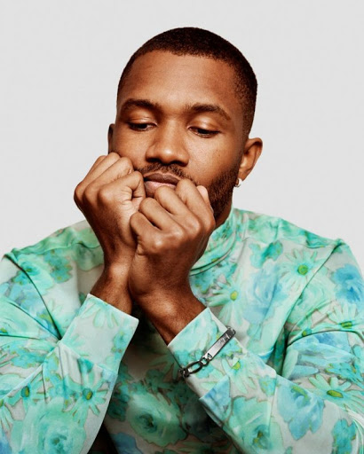

ABOUT
Christopher Edwin Breaux
Otherwise known as Frank Ocean, Breaux was born on October 28th, 1987 in Long Beach California. As a kid he was always known for his musical abilities. He ended up moving from New Orleans to LA during his college years to try to make a living off of music. He worked with some of his friends and eventually built himself up enough to write for big stars such as Justin Beiber and John Legend. He then started collaborating with the group Odd Future, and eventually was offered the ability to go solo. He released his debut track “Novacane” back in 2011 and has been making record breaking and Grammy award winning music ever since. He is now famously known for his unique style of R & B and continually pushed the boundaries in his work and the industry.
